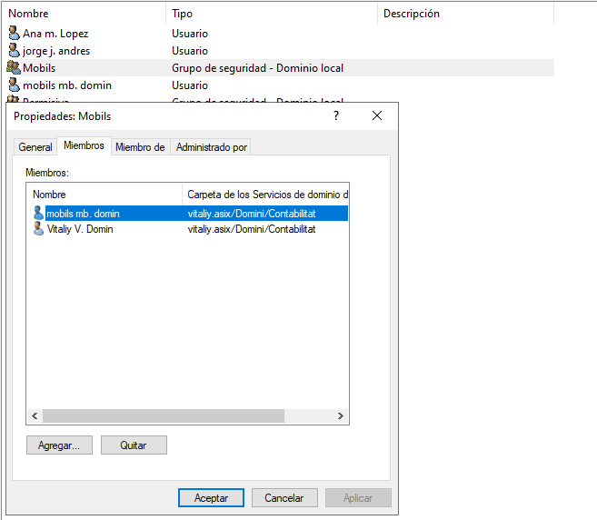
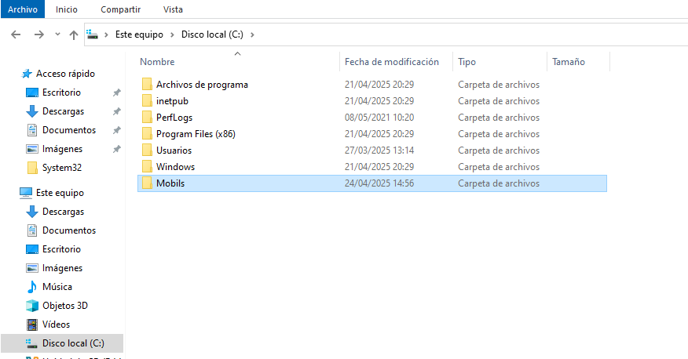
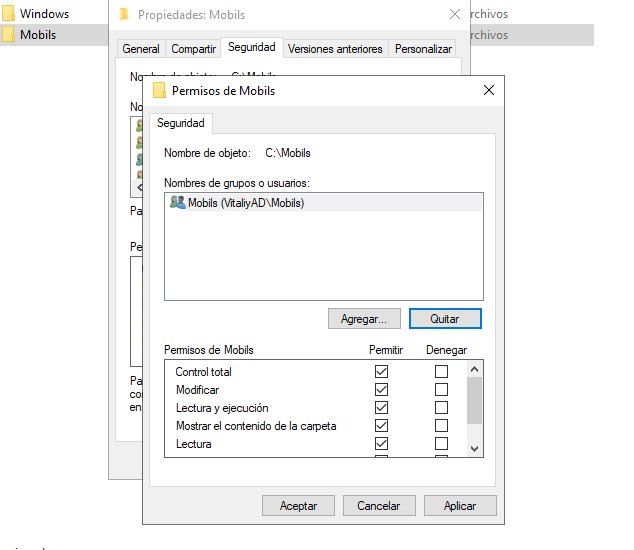
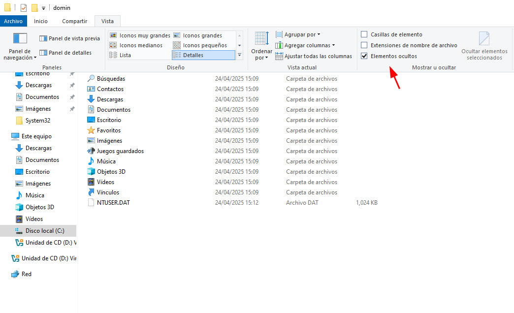
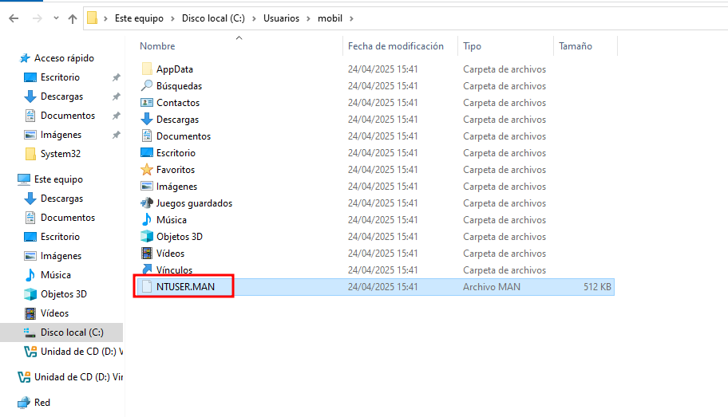
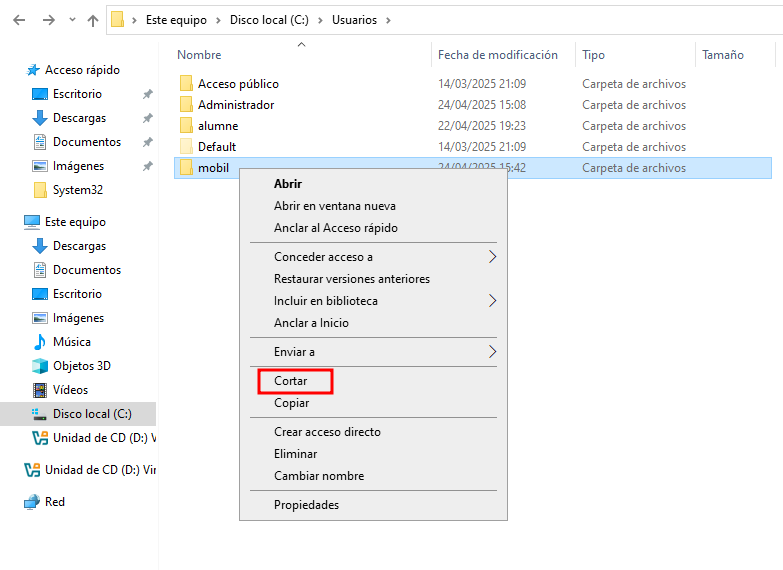
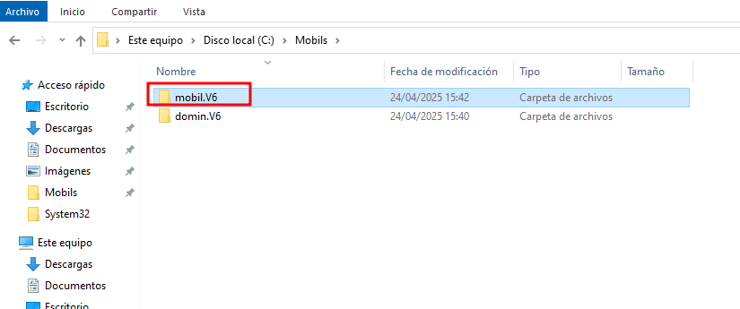
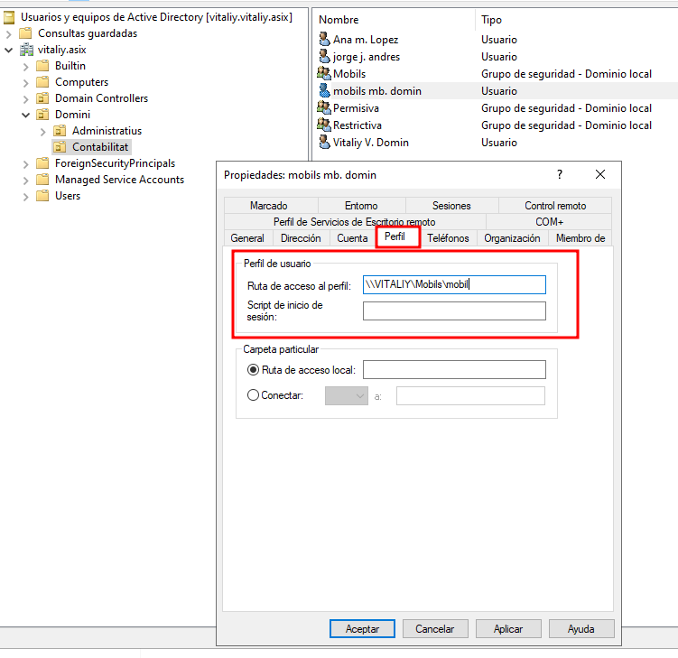

Perfils mòbils obligatoris
Perfils Mòbils i Perfils Mòbils Obligatoris
Quan treballem en entorns de domini amb Windows Server, és habitual utilitzar perfils mòbils per centralitzar i mantenir la configuració dels usuaris independentment de l’equip on iniciïn sessió.
Què és un perfil mòbil?
Un perfil mòbil (roaming profile) és un tipus de perfil d’usuari que es desa en un servidor. Quan un usuari inicia sessió en qualsevol ordinador del domini, el seu perfil es descarrega automàticament i manté les seves preferències, arxius, configuracions i fons d’escriptori.
Què és un perfil mòbil obligatori?
Un perfil mòbil obligatori és un perfil mòbil especial que no desa cap canvi que faci l’usuari. Cada vegada que l’usuari inicia sessió, el perfil es carrega des del servidor però tots els canvis es perden en tancar la sessió.
Això és útil en entorns com:
- Ordinadors públics
- Aules d’informàtica
- Llocs on no es vol que l’usuari personalitzi l’entorn
Taula de comparació
| Característica | Perfil mòbil normal | Perfil mòbil obligatori |
|---|---|---|
| Es desa al servidor | ✅ Sí | ✅ Sí |
| Carrega el perfil a qualsevol PC | ✅ Sí | ✅ Sí |
| Els canvis es guarden | ✅ Sí | ❌ No, es descarten a la sortida |
| Usuaris poden personalitzar | ✅ Sí | ❌ No (es restableix a cada inici) |
| Ús típic | Usuaris habituals | Ordinadors públics, alumnes, aules |
Com crear un perfil mòbil obligatori
Per crear un perfil mòbil obligatori, primer cal crear un perfil mòbil normal per a l’usuari i configurar-lo amb l’entorn desitjat (escriptori, configuracions, documents...).
Un cop configurat, cal tancar la sessió de l’usuari perquè el perfil es desi correctament.
Després, des del servidor, cal localitzar la carpeta del perfil de l’usuari, per exemple:
\\servidor\mobils\nomusuari.V6
Dins d’aquesta carpeta trobarem un fitxer anomenat NTUSER.DAT. Aquest fitxer conté la configuració del registre de l’usuari. Per convertir el perfil en obligatori, cal canviar-ne l’extensió a NTUSER.MAN.
A partir d’aquest moment, el perfil esdevé obligatori. Això vol dir que qualsevol canvi que faci l’usuari no es guardarà quan tanqui la sessió: cada cop que es connecti, el perfil es carregarà des del servidor exactament com estava inicialment.
Comencem creant l’usuari i el grup mobils, i afegim l’usuari (per exemple, "mobil") dins d’aquest grup.

Després, creem una carpeta anomenada mobils (o un altre nom que vulguis) dins de la unitat C: o en una altra ubicació disponible.

Aquesta carpeta ha de tenir permisos ajustats: posem el grup mobils com a propietari amb permís total.

Iniciem sessió amb l’usuari "mobil" dins del servidor perquè es generi automàticament el seu directori de perfil. Tot seguit, tanquem la sessió.
Ara tornem a entrar amb l’usuari administrador i mostrem els elements ocults, ja que el fitxer NTUSER.DAT és un fitxer ocult.

Ens dirigim a C:\Users\mobil, localitzem el fitxer NTUSER.DAT i li canviem l’extensió a .MAN.

Tot seguit, tallem la carpeta del perfil (mobil) que s’ha creat automàticament.

Enganxem aquesta carpeta dins del directori compartit de perfils mòbils (per exemple C:\mobils\) i modifiquem el nom per afegir l’extensió .V6, que identifica la versió del perfil.

Ara, des de "Usuarios y equipos del dominio", editem les propietats de l’usuari i especifiquem la ruta d’accés al seu perfil mòbil obligatori a l’apartat "Perfil". La ruta ha de ser accessible via xarxa, per exemple:
\\servidor\mobils\mobil.V6

Un cop tot això està configurat, el perfil mòbil obligatori ja està actiu. Això significa que l’usuari podrà iniciar sessió des de qualsevol ordinador del domini i sempre tindrà el mateix entorn.
⚠️ Important:
Cada cop que l’usuari tanqui sessió, tot el que hagi fet dins del perfil es perdrà (documents, carpetes, configuracions...). Els perfils obligatoris no desen els canvis. Això és útil en entorns com escoles, biblioteques o ordinadors compartits, on no es vol que els usuaris modifiquin permanentment el sistema.